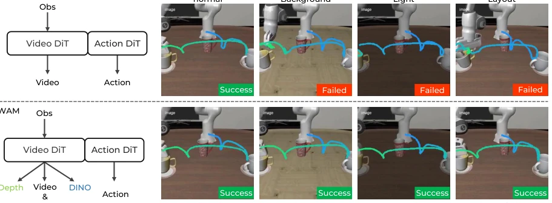
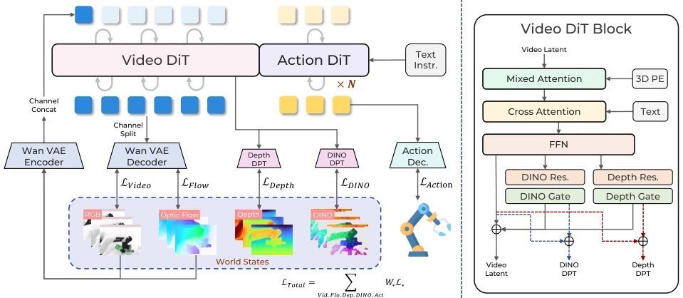
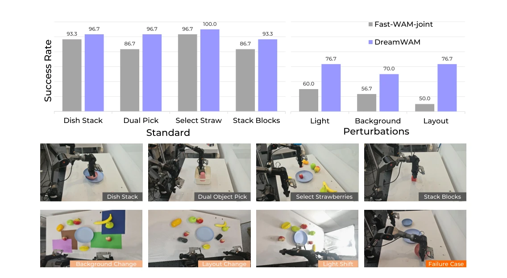

This paper equips RGB world models with a pair of "contact lenses". The authors keenly point out that existing WAMs (such as Fast-WAM) are obsessed with pixel-level future prediction but neglect the geometric and semantic structures essential for actions. DreamWAM introduces optical flow, depth, and semantic supervision during training, yet "removes the lenses" to return to RGB deployment during inference; this "cheating during training, following rules during inference" strategy is quite cunning. Although robustness is improved, the offline pre-computation of external features (RAFT, Depth Anything) increases engineering burden, and the value of explicit geometric output during inference remains unverified. However, performance surges under visual distribution shift, indeed proving that "action-relevant states" are more important than "good-looking future videos," constituting an effective correction to WAM representation design.
研究动机Motivation
现有 WAM 主要关注 RGB 空间的未来预测（Yuan et al. 2026; Cen et al. 2025）。问题在于，RGB 将任务相关状态（物体位移、接触）与无关变化（纹理、光照、背景）纠缠在一起。如图 1 所示，当视觉分布偏移时，RGB 预测可能失真，导致策略失败。现有工作（如 WorldVLA）虽引入辅助知识，但多作为独立任务或静态特征，未与未来预测动态耦合。核心问题在于：WAM 应该想象什么？仅仅像素完美渲染不够，需要显式表达动作相关的动态、空间组织和语义结构，以应对未见过的视觉扰动，否则模型容易过拟合训练分布的视觉细节而非任务逻辑。
Existing WAMs mainly focus on future prediction in RGB space (Yuan et al. 2026; Cen et al. 2025). The problem lies in that RGB entangles task-relevant states (object displacement, contact) with irrelevant changes (texture, lighting, background). As shown in Figure 1, when visual distribution shifts, RGB predictions may distort, leading to policy failure. Existing work (such as WorldVLA) introduces auxiliary knowledge, but mostly as independent tasks or static features, not dynamically coupled with future prediction. The core question is: What should WAM imagine? Pixel-perfect rendering alone is insufficient; explicit expression of action-related dynamics, spatial organization, and semantic structures is required to cope with unseen visual perturbations, otherwise the model is prone to overfitting visual details of the training distribution rather than task logic.

Figure 1: Dreaming beyond RGB. RGB-only WAMs organize future learning around video appearance, whereas DreamWAM additionally learns motion, geometry, and semantic views of future state. Representative LIBERO rollouts under the same instruction show that the RGB-only baseline succeeds in the original scene but fails under unseen background, dimmed lighting, and layout changes, while DreamWAM completes the task across all four settings.
DreamWAM is based on the VideoDiT-ActionDiT architecture, reconstructing future prediction as structured world modeling. The training phase includes two paths: 1) RGB and optical flow (RAFT) share the latent space for joint denoising, explicitly modeling temporal changes; 2) Depth (Depth Anything V3) and semantic (DINOv2) features are injected into VideoDiT layers via gated residual branches, avoiding interference with pre-trained video priors. The inference phase removes all non-RGB branches and external encoders, retaining only RGB denoising and action generation, compatible with Fast-WAM deployment. The key innovation lies in heterogeneous future modeling: VAE-aligned motion uses full denoising, heterogeneous features use residual correction, ensuring action-related structures are internalized without increasing inference cost. This design balances representation richness and deployment efficiency.

Figure 2: Overview of DreamWAM. (a) During training, DreamWAM augments RGB future prediction with motion, geometry, and semantic views. RGB and optical-flow latents are jointly denoised, while geometry and semantic targets shape selected VideoDiT layers through gated residual branches. Shared attention exposes the resulting representation to ActionDiT. All beyond-RGB supervision pathways are disabled at inference, which retains RGB video-action denoising. (b) Geometry- and semantic-oriented residual branches selectively update the VideoDiT representation during training.
Evaluated on LIBERO, LIBERO-Plus, and real robots (AgileX PiPER). Baselines include Fast-WAM and its Joint variant. The metric is task success rate. Results show DreamWAM achieves a small improvement on standard tasks (98.0%->98.9%), but significantly outperforms baselines under out-of-distribution perturbations (LIBERO-Plus no rollout from 51.36% to 63.44%). In real scenarios, success rate improves from 55.6% to 74.4% under light/background changes. Ablation studies indicate motion signals are most critical, and residual injection outperforms full denoising. This proves structured future supervision can be internalized as policy robustness, rather than relying solely on imagination during inference. This provides a new direction for future model design: world knowledge during training is more important than video generation during inference.

Figure 3: Real-world robot evaluation. Top: success rates (%) on four standard tasks and three unseen visual perturbations, with 30 trials per setting. Bottom: representative task and perturbation observations. The perturbations retain the Strawberry Selection instruction and success criterion. The rightmost panel shows a Fast-WAM-Joint failure caused by an inaccurate gripper-to-plate spatial relation.